{kind=link}
Czym jest Strażnik
Serwer zbiera dane z kilku publicznych źródeł, liczy punktację dla każdego województwa i wysyła powiadomienia. Aplikacja pokazuje mapę, źródła każdego punktu i historię ostatnich 12 godzin. Nie potrzebujesz konta ani własnego serwera.
Wynik jest wskaźnikiem aplikacji, a nie prawdopodobieństwem uderzenia. Żaden pojedynczy artykuł ani strefa nie podniesie poziomu sam — próg osiąga dopiero oficjalny komunikat, poważny obiekt blisko granicy albo kilka niezależnych źródeł naraz.
1. Instalacja i aktualizacje
- Pobierz najnowszy Straznik.apk na telefon z Androidem.
- Otwórz plik z folderu Pobrane. Jeśli Android poprosi, zezwól przeglądarce lub menedżerowi plików na instalowanie aplikacji z tego źródła.
- Zatwierdź instalację i uruchom Strażnika. Pozwól systemowi przeskanować plik — nie wyłączaj Play Protect.
- Zezwól na powiadomienia i zapisz swoje województwo w ⚙ → Moje miejsca.
Zgoda „Instalowanie nieznanych aplikacji” — i jak ją cofnąć
Strażnika nie ma w Google Play, więc Android pozwoli go zainstalować dopiero wtedy, gdy aplikacja otwierająca plik — zwykle Chrome — dostanie uprawnienie Instalowanie nieznanych aplikacji. Przeglądarka przerywa wtedy instalację i przenosi Cię do przełącznika Zezwalaj z tego źródła. To normalny krok, nie błąd.
Uprawnienie dotyczy tylko tej jednej aplikacji, ale zostaje włączone, dopóki go nie wyłączysz. Dlatego po instalacji warto je cofnąć:
- Ustawienia → Aplikacje → Specjalny dostęp do aplikacji → Instalowanie nieznanych aplikacji.
- Wybierz aplikację, którą otwierałeś plik (zwykle Chrome, oznaczoną „Dozwolone”).
- Wyłącz Zezwalaj z tego źródła.
Szybciej: w Ustawieniach wpisz w wyszukiwarce nieznanych. Nazwy pozycji różnią się nieco między wersjami Androida i producentami, ale ścieżka jest ta sama. Strażnik działa normalnie po cofnięciu zgody; przy następnej aktualizacji Android poprosi o nią ponownie.
Jeśli aplikacja GitHuba przechwytuje link i pobieranie staje, otwórz link w przeglądarce. Jest też kopia APK w repozytorium.
Aktualizacja z poziomu aplikacji
Strażnik sprawdza nowe wydanie przy każdym uruchomieniu i przy powrocie na wierzch (nie częściej niż co 30 minut). Okno aktualizacji pokazuje numer wersji i listę zmian. Ręcznie: ⚙ → Aplikacja → ⬆ Sprawdź aktualizacje.
Przy zwykłej aktualizacji możesz wybrać Później. Po wybraniu instalacji aplikacja pobiera plik, sprawdza jego sumę SHA-256 i przekazuje go Androidowi do zatwierdzenia. Instaluj nowe wydanie na istniejące — ustawienia i Moje miejsca zostają.
{kind=link}
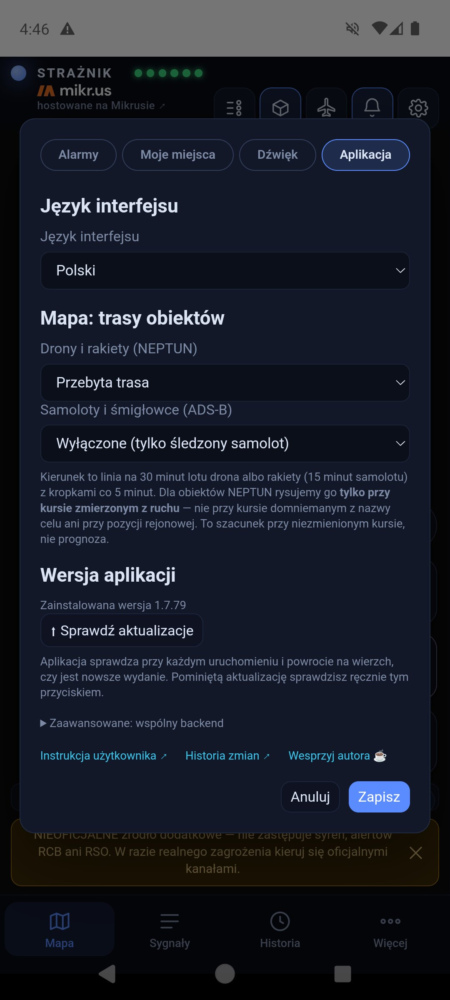
2. Pierwsze kroki: Moje miejsca, powiadomienia, język
Moje miejsca
⚙ → Moje miejsca → 📍 Otwórz Moje miejsca. Zapiszesz do 8 miejsc, np. Dom, Praca, Wyjazd. Dla każdego wybierasz województwo i zaznaczasz Obserwuj alerty dla tego województwa. Powiadomienia przychodzą dla obserwowanych województw; kilka miejsc w tym samym województwie daje jedną subskrypcję. Pierwsze miejsce wyznacza „mój region” na mapie.
Zakres miejsca może być dokładny: po dotknięciu ◎ Pobierz pozycję jeden raz aplikacja zapisuje jednorazowo punkt i jego dokładność. Nie ma śledzenia w tle. Przy otwartej aplikacji Strażnik policzy wtedy na telefonie odległość do widocznych obiektów. Powiadomienia i tak idą według województwa.
Dane miejsc zostają na urządzeniu — przycisk nazywa się Zapisz na urządzeniu.
{kind=link}
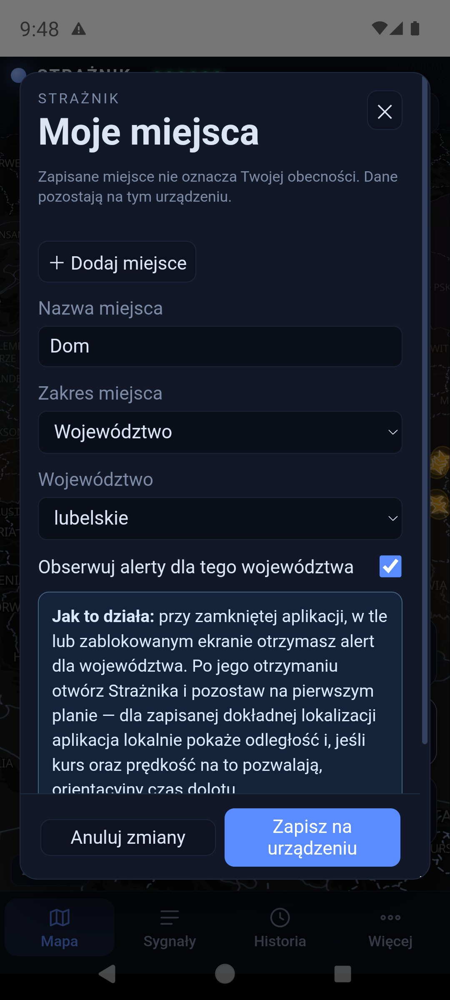
{kind=link}
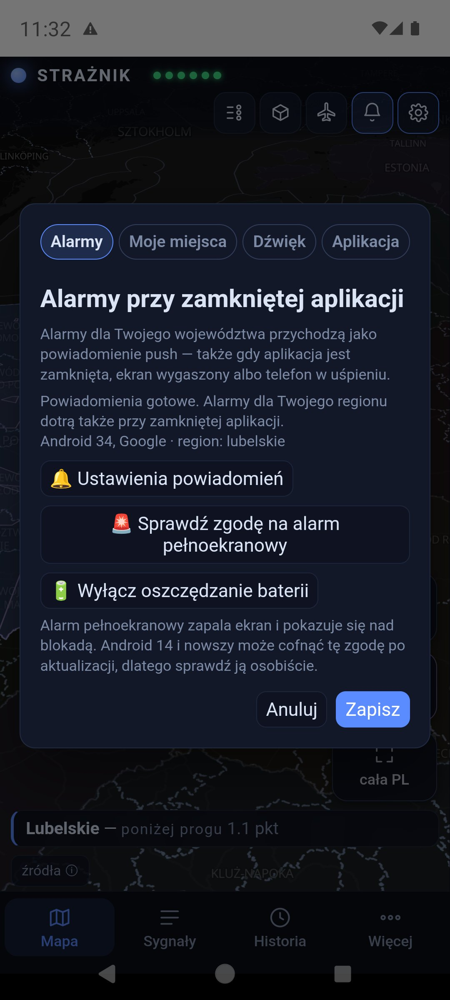
{kind=link}
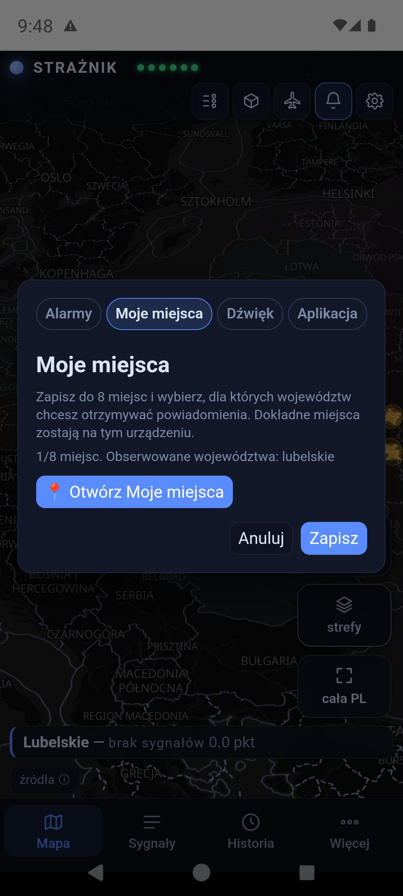
{kind=link}
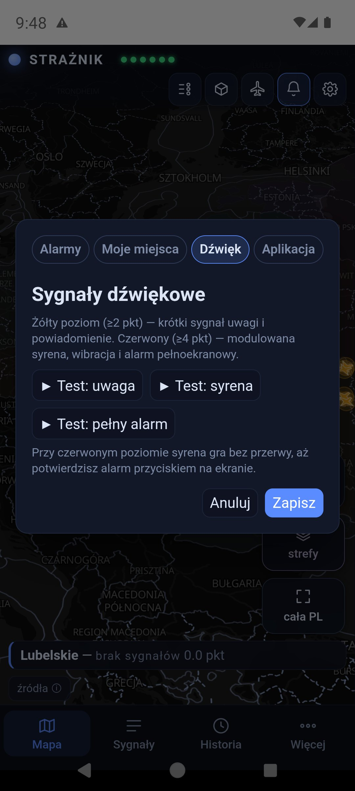
Zgody na Androidzie
W zakładce Alarmy sprawdzisz, czy powiadomienia są gotowe i dla jakiego regionu. Jeśli chcesz tylko oglądać mapę, wyłącz suwak Alarmy na tym telefonie — telefon zostanie wypisany ze wszystkich województw i przestanie dostawać powiadomienia o alarmach oraz przypomnienia o zgodach. Status nad suwakiem pokazuje, do ilu województw telefon jest zapisany (potwierdzone przez Firebase). Zgody Androida zostają bez zmian — aplikacja nie może ich zmienić. Ostrzeżenie o zgodach na mapie zamkniesz też krzyżykiem. Trzy przyciski prowadzą wprost do ustawień systemu: 🔔 Ustawienia powiadomień, 🚨 Sprawdź zgodę na alarm pełnoekranowy i 🔋 Wyłącz oszczędzanie baterii. Android 14 i nowszy potrafi cofnąć zgodę na pełny ekran po aktualizacji — sprawdź ją osobiście.
Polski / English
⚙ → Aplikacja → Język interfejsu. Okno ustawień od razu pokazuje podgląd; Zapisz przeładowuje aplikację w nowym języku, Anuluj zostawia poprzedni. Wersja angielska obejmuje interfejs, opisy obiektów i nazwy na mapie; cytowane komunikaty i tytuły artykułów pozostają w oryginale.
3. Ekran główny
Układ ma cztery strefy: pasek u góry, kafelki przy prawej krawędzi mapy, baner mojego regionu nad dolnym paskiem i zakładki na dole.
| Element | Co robi |
|---|---|
| STRAŻNIK i sześć diod | Diody to źródła: NEPTUN, Alarmy UA, ADS-B, RSS, RCB/RSO, PAŻP. Zielona — źródło odpowiada, czerwona — nie odpowiada. Dioda RCB/RSO pokazuje Regionalny System Ostrzegania, z którego przychodzą oficjalne Alerty RCB; jest zielona tylko wtedy, gdy RSO odpowiedziało w ostatnich minutach. Dotknięcie diod otwiera opis źródeł; dotknięcie nazwy — krótki opis aplikacji. Zielona dioda oznacza działające źródło, a nie brak zagrożenia. |
| Ikona suwaków | Legenda symboli, kolorów województw i stref. |
| Ikona sześcianu | Widok 2D / 3D. W 3D wysokość bryły województwa rośnie z liczbą punktów — także poniżej progu. |
| Ikona samolotu | Obce maszyny nad wschodnią flanką (rozdział 8). |
| Ikona dzwonka | Powiadomienia: w aplikacji — włączenie lub wyciszenie, na stronie WWW — powiadomienia w przeglądarce (rozdział 10). |
| Ikona zębatki | Ustawienia: Alarmy, Moje miejsca, Dźwięk, Aplikacja. |
| mój region | Kadruje mapę na pierwszym zapisanym miejscu. |
| strefy | Włącza i wyłącza warstwę stref PAŻP. Przygaszony kafelek — warstwa wyłączona. |
| cała PL | Pokazuje Polskę razem z Ukrainą. |
| Baner nad zakładkami | Twój region, jego poziom i punkty, np. „Lubelskie — poniżej progu 1,1 pkt”. Dotknięcie otwiera kartę województwa. |
| źródła ⓘ | Autorzy danych i mapy. |
| Zakładki Mapa Sygnały Historia Więcej | Mapa wraca do widoku głównego; Sygnały otwiera panel; Historia przewija 12 godzin; Więcej — „O aplikacji i punktacja”, „Instrukcja użytkownika”, „Wesprzyj autora”. |
Przy starcie na dole pojawia się pasek „NIEOFICJALNE źródło dodatkowe…”. Możesz go zamknąć krzyżykiem — wraca przy alarmie. Panele i okna zamkniesz krzyżykiem, zakładką Mapa albo dotknięciem obok.
{kind=link}
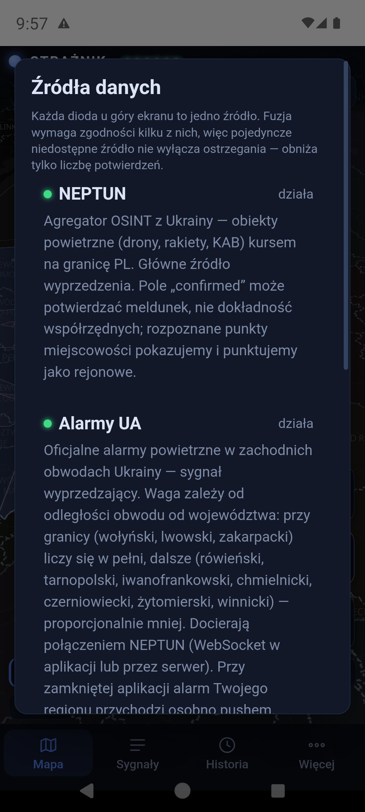
{kind=link}
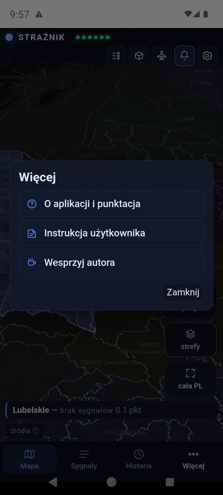
4. Mapa, obiekty i samoloty
Przesuwaj mapę palcem, powiększaj dwoma palcami i dotykaj obiektów. Kolor województwa pokazuje punkty z ostatnich 60 minut:
| Kolor | Znaczenie |
|---|---|
| granatowy | 0–1,9 pkt — spokojnie (poniżej progu) |
| żółty | od 2 pkt — podwyższona uwaga |
| czerwony | od 4 pkt — wysoki priorytet |
| przygaszony, oliwkowy | kolor wyłącznie od sąsiednich województw; karta ma kreskowaną ramkę i napis „podniesione przez sąsiedztwo · bez alarmu”. Taki kolor nie wysyła powiadomienia. |
Obiekty z NEPTUN-a nad Ukrainą mają osobne kształty — legenda pokazuje każdy z nich:
| Obiekt | Symbol |
|---|---|
| Dron / BpSP | żółta sylwetka z prostymi skrzydłami i wciętym ogonem; czerwony dziób i czerwony grot przed nim wskazują kierunek lotu |
| Dron Shahed | pomarańczowe skrzydło delta |
| Dron FPV | cztery wirniki; lokalny, bez punktów |
| Dron rozpoznawczy | biało-szara sylwetka z długimi skrzydłami |
| Rakieta manewrująca | czerwony korpus ze skrzydłami |
| Rakieta balistyczna | różowy smukły grot |
| Bomba kierowana KAB | żółta sylwetka bomby |
| MiG-31K (nosiciel) | fioletowy samolot |
| Obiekt nierozpoznany | szary romb ze znakiem zapytania |
Kurs nieznany: ikona nie jest obracana, ma przerywaną białą obwódkę i znak zapytania — nie wskazuje kierunku. Pulsujący czerwony pierścień mają tylko obiekty, które w tej chwili dodają punkty któremuś województwu; pozostałe stoją spokojnie.
Różowo podświetlony obwód Ukrainy z przerywanym konturem ma alarm powietrzny, który w tej chwili daje punkty któremuś województwu. Bliższe obwody są wyraźniejsze, dalekie ledwo widoczne. Dotknięcie obwodu pokazuje, kiedy przyszedł sygnał i ile punktów daje któremu województwu.
Okrąg wokół obiektu to niepewność pozycji (±km), a nie zasięg rażenia. Przerywana linia to trasa przelotu — rysowana tylko wtedy, gdy źródło podaje pozycje nadające się do śledzenia. W ⚙ → Aplikacja → „Mapa: trasy obiektów” wybierzesz osobno dla dronów i rakiet oraz dla samolotów: wyłączone, przebyta trasa albo trasa i kierunek lotu (linia na 30 minut lotu drona lub rakiety, 15 minut samolotu, z kropkami co 5 minut). Kierunek dronów i rakiet rysujemy tylko przy kursie zmierzonym z ruchu obiektu. Obiekt z pozycją przybliżoną (duże koło niepewności) nie ma ani trasy, ani kierunku — a większość obiektów NEPTUN stoi w miejscu między odczytami, więc linie widać tylko przy części z nich. Niebieskie samoloty i śmigłowce to lotnictwo wojskowe z jawnym transponderem ADS-B.
Czas pod ikoną (np. „7 min”) to wiek ostatniego meldunku o tym obiekcie. NEPTUN to zgłoszenia ludzi, nie radar: obiekt stoi w tym samym miejscu, dopóki ktoś nie zgłosi go ponownie, a bywa, że kolejnego zgłoszenia nie ma wcale. Podpis pojawia się po pięciu minutach, a ikona stopniowo blednie — im bledsza, tym starsza informacja. Po godzinie ikona jest wyraźnie wyblakła. Nieruchome ikony nie oznaczają więc zawieszonej mapy, tylko brak nowych zgłoszeń. Kartę obiektu otwiera linia ostatni meldunek, a przy meldunku starszym niż kwadrans dopisek, że obiekt mógł się od tego czasu przemieścić.
{kind=link}
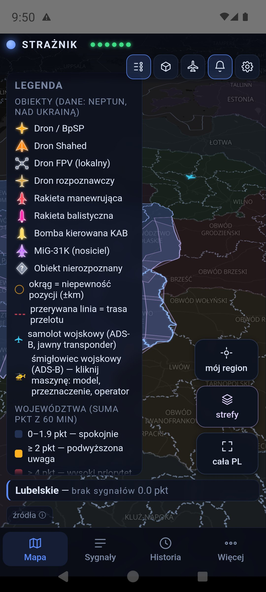
Karta obiektu i samolotu
Dotknięcie obiektu otwiera miniaturę karty w lewym dolnym rogu, a obiekt dostaje na mapie biały pierścień. Strzałka ⌃ rozwija kartę, ⌄ zwija, ✕ zamyka.
Karta drona lub rakiety podaje typ, rejon zgłoszenia, liczbę potwierdzeń, wiarygodność, niepewność pozycji, kurs i odległość od granicy Polski. Czas dolotu (ETA) pojawia się tylko dla pozycji nadającej się do takiego obliczenia. Gdy źródło oznaczy pozycję jako rejon zgłoszenia, karta pisze „przybliżony rejon zgłoszenia — brak potwierdzonej trasy i czasu dolotu”, a odległość jest szacunkiem. Ilustracje obiektów są poglądowe (AI) i nie służą do rozpoznawania modelu.
Karta samolotu lub śmigłowca pokazuje znak wywoławczy, rejestrację, kraj, model, przeznaczenie, wysokość, prędkość i kurs. Zdjęcie przedstawia przykładowy egzemplarz tego modelu — pod nim są autor, źródło i licencja. 📍 śledź trasę rysuje ślad lotu. Mapa nie pokazuje maszyn z wyłączonym transponderem.
{kind=link}
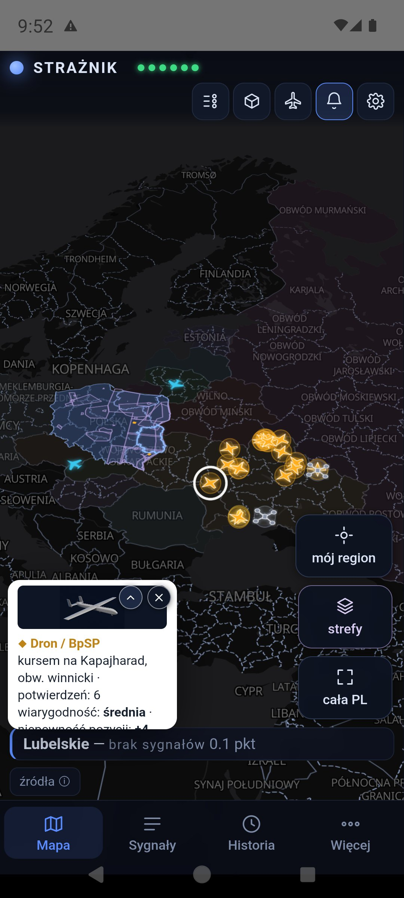
{kind=link}
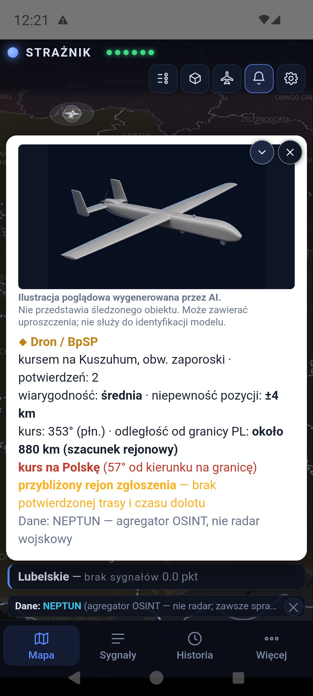
{kind=link}
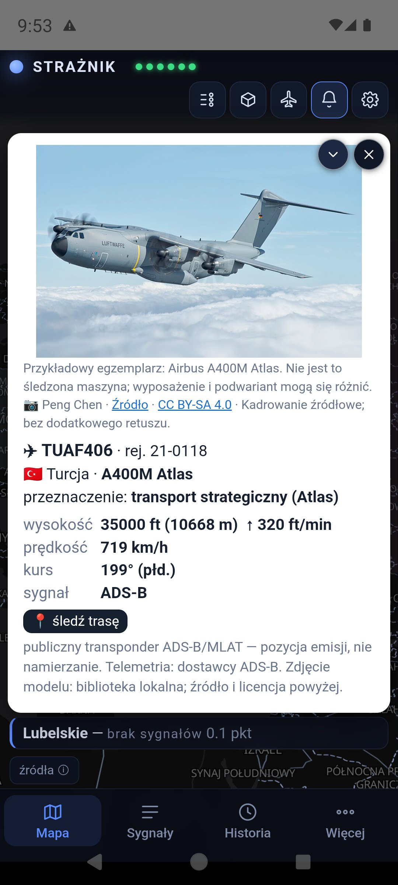
5. Strefy PAŻP na mapie
Kafelek strefy pokazuje aktywne strefy przestrzeni powietrznej z planu dobowego Polskiej Agencji Żeglugi Powietrznej. Strefa, która stoi od dawna albo była już aktywna przy starcie obserwacji, ma spokojny fioletowy kontur. Strefa włączona niedawno, na oczach Strażnika, jest żółta i ma bryłę 3D.
Dotknięcie strefy otwiera jej opis: typ i jego znaczenie po polsku, od kiedy Strażnik ją widzi, rezerwację do (koniec dzisiejszego wpisu w planie dobowym — strefa bywa przedłużana) i pułap. Przycisk z nazwą województwa prowadzi do jego karty, bo region w całości przykryty strefą trudno dotknąć na mapie.
Strefy nakładające się na siebie: dotknięcie otwiera najmniejszą strefę pod palcem, a pozostałe w tym miejscu są wymienione jako przyciski „W tym miejscu są też”.
Sama warstwa stref nie dodaje punktów. Punktuje tylko rzadka strefa typu D, R, NPZ albo ADHOC — zasady są w rozdziale o punktacji stref.
{kind=link}
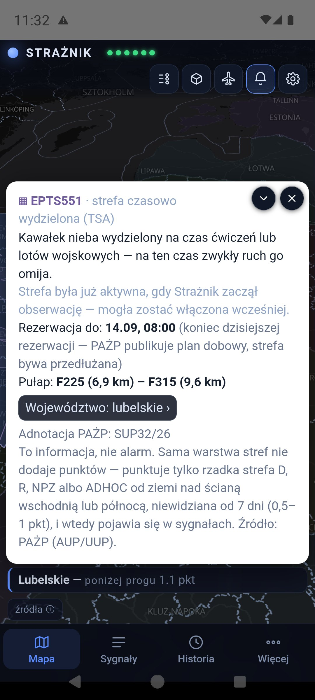
{kind=link}
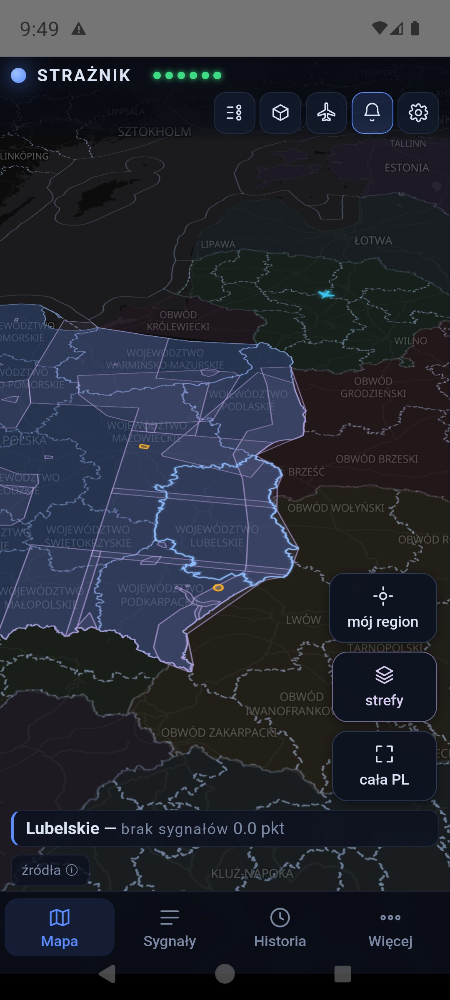
{kind=link}
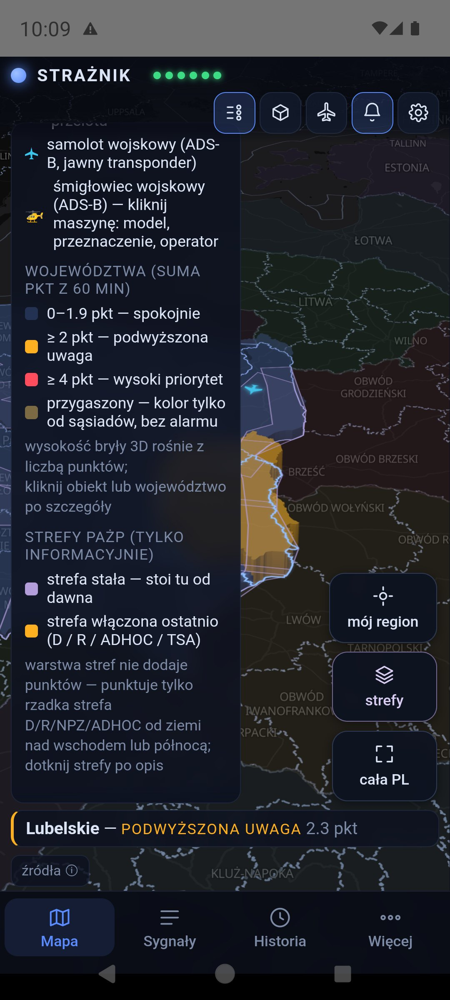
6. Panel sygnałów
Zakładka Sygnały otwiera karty województw. Twój region jest pierwszy i ma podpis „mój region”. Każda karta podaje punkty, poziom, podsumowanie „składa się z” (np. „0,6 ALARM UA”) i strefy PAŻP nad województwem. Dotknięcie karty rozwija listę sygnałów.
Każdy wiersz sygnału pokazuje źródło, wkład w punktach, tytuł (artykuł otwiera się jako link), wiek sygnału i jego wagę. Sygnał ma pełną wagę przez 30 minut, potem traci ją aż do zera w 60. minucie — dopisek „waga 64%” to właśnie to. Przekreślona liczba to wartość nominalna, której nie zaliczono, bo sygnał wygasa albo klasa źródła osiągnęła limit. Liczby w podsumowaniu są zaokrąglone osobno, dlatego ich suma może różnić się o 0,1 od wyniku.
Sygnał bez punktów zostaje widoczny z objaśnieniem:
- Powtórzenie oficjalnego alertu — artykuł przepisujący świeży Alert RCB.
- Materiał historyczny / następstwa — rocznica, proces, odbudowa.
- Odwołany przez RCB i Po odwołaniu alertu RCB — alert, który RCB odwołało, i artykuły o nim.
- Relacja z wcześniejszego zdarzenia — serwer przeczytał artykuł, a treść opisuje coś sprzed ponad godziny.
- Nie udało się przeczytać artykułu — bez punktów — treści nie dało się pobrać; link zostaje.
Wpis SĄSIEDZTWO to przeniesienie punktów z sąsiedniego województwa (rozdział 11).
{kind=link}
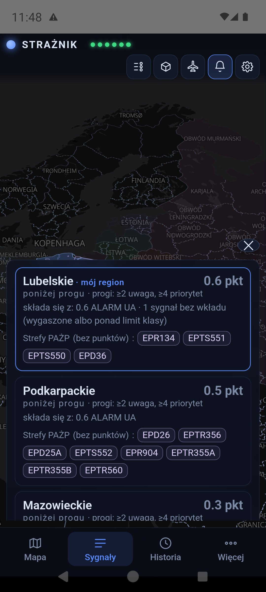
Niżej panel ma dwie listy obserwacji bez punktów: Obiekty ≤ 250 km od granicy (NEPTUN) i Lotnictwo wojskowe (ADS-B) nad wschodnią Polską. To publiczne dane z transponderów, a nie namierzanie. W karcie województwa, jeśli są dostępne, znajdziesz też 📷 Kamery w regionie — kamery drogowe, nie narzędzie do wykrywania obiektów.
{kind=link}
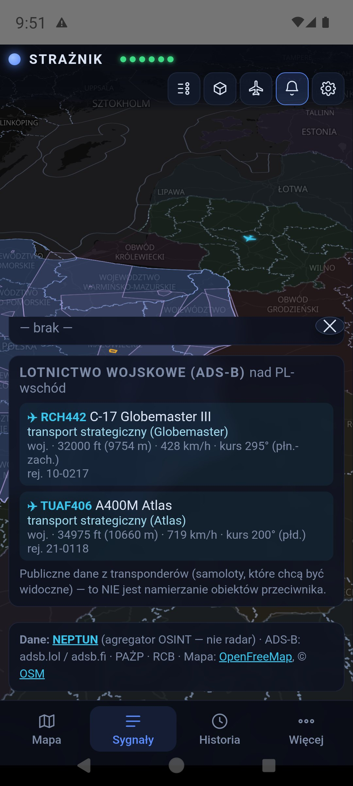
{kind=link}
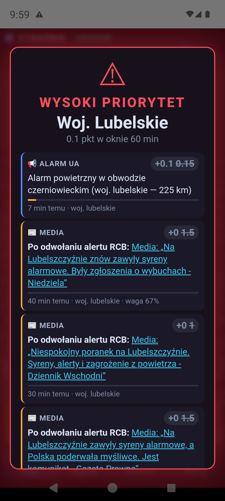
7. Historia 12 godzin
Zakładka Historia włącza ⏱ PODGLĄD HISTORII. Pasek suwaka jest pokolorowany według poziomu w każdej chwili, więc od razu widać, kiedy coś się działo. Przeciągnij uchwyt: mapa, kolory, obiekty i samoloty pokazują wybraną chwilę, a etykieta podaje godzinę i liczbę minut wstecz. Pod suwakiem jest najwyżej oceniane województwo z tej chwili, liczba obiektów i maszyn w migawce oraz link „N sygnałów w oknie”, który otwiera panel z tamtą chwilą.
Pod suwakiem jest rząd przycisków: −12 h (początek), alarm wstecz (początek poprzedniego alarmu), −10 i −1 minut, ▶ odtwarzanie i pauza, +1 i +10 minut, alarm naprzód (następny alarm) oraz koniec (najnowsza migawka). Przytrzymanie ±1 i ±10 przewija dalej. ×1 w nagłówku zmienia prędkość odtwarzania na ×2 i ×4.
W trybie historii panel ma nagłówek PODGLĄD HISTORII, a czas sygnałów liczy się względem wybranej chwili („36 min wcześniej”). ZMIEŃ NA ŻYWO w nagłówku paska, zakładka Mapa albo systemowy przycisk „wstecz” przywraca bieżący widok.
Historia jest pobierana raz na urządzenie, a przewijanie działa lokalnie, bez zapytań do serwera przy każdym ruchu palca. Migawki powstają zwykle co minutę — to odtwarzanie zapisanych próbek, nie nagranie ciągłe.
{kind=link}
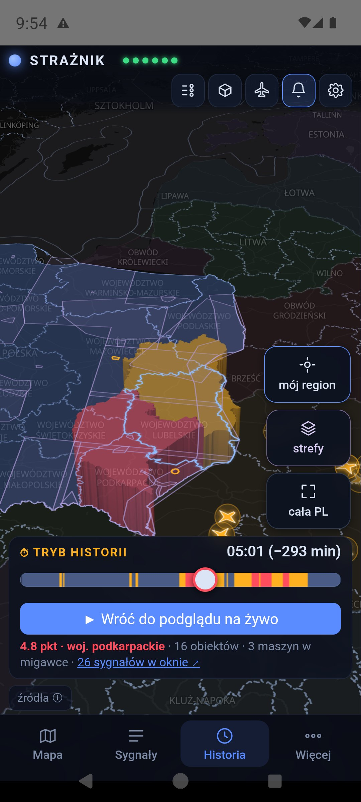
{kind=link}
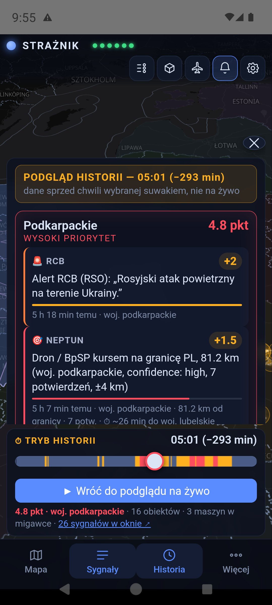
8. Obce maszyny nad wschodnią flanką
Ikona samolotu u góry otwiera listę wojskowych maszyn z rosyjską lub białoruską rejestracją, widocznych w publicznych danych ADS-B/MLAT nad wschodnią flanką. Panel ma dwie części: w zasięgu teraz i dziennik — wleciały / zniknęły z zasięgu z ostatnich 12 godzin, łącznie z czasem, gdy aplikacja była zamknięta.
W trybie historii panel pokazuje wybraną chwilę. Przygaszona maszyna na mapie to ostatnia zapisana pozycja sprzed najwyżej 2,5 minuty. „Zniknęła” oznacza utratę sygnału w danych, a nie lądowanie ani zestrzelenie. Te obserwacje nie dodają punktów, a pusta lista nie oznacza pustego nieba — wiele maszyn leci z wyłączonym transponderem.
{kind=link}
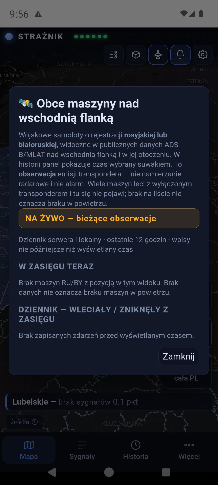
9. Alarmy i powiadomienia
| Poziom | Co się dzieje |
|---|---|
| poniżej 2 pkt | Informacja na mapie i w panelu, bez powiadomienia. |
| żółty, od 2 pkt — PODWYŻSZONA UWAGA | Powiadomienie i krótki sygnał uwagi na zwykłej głośności powiadomień. Szanuje tryb cichy i Nie przeszkadzać. |
| czerwony, od 4 pkt — WYSOKI PRIORYTET | Syrena, wibracja i alarm pełnoekranowy, jeśli system na to pozwala. Syrena gra w pętli, dopóki nie dotkniesz POTWIERDZAM na ekranie alarmu albo Wycisz alarm w powiadomieniu. Głośność „Alarmy” rośnie co najmniej do połowy; po włączeniu opcji pełnej głośności — do maksimum. Po wyciszeniu wraca poprzednia głośność. |
Kiedy telefon dzwoni, a kiedy nie
- Powiadomienie przychodzi tylko dla obserwowanych województw z Moich miejsc.
- Województwo musi mieć co najmniej 1 pkt własnych sygnałów. Kolor wyłącznie od sąsiadów nie dzwoni.
- Przeniesienie od sąsiadów może domknąć próg najwyżej o jeden stopień: własne punkty poniżej żółtego plus sąsiad dają co najwyżej żółty.
- Bez powtórek: jeśli wynik spadnie i znów przekroczy ten sam próg w ciągu 60 minut od powiadomienia, zmienia się tylko mapa. Wyjątek: nowy Alert RCB/RSO. Wejście na wyższy poziom, z żółtego na czerwony, powiadamia zawsze.
- W otwartej aplikacji dźwięk gra według tych samych zasad co powiadomienie, nie według koloru mapy — dla każdego obserwowanego województwa, nie tylko pierwszego miejsca.
- Powiadomienie, które dotarło z opóźnieniem ponad 10 minut (np. po powrocie zasięgu), pokazuje się cicho z dopiskiem „opóźnione o … min”.
W ⚙ → Dźwięk są ▶ Test: uwaga, ▶ Test: syrena i ▶ Test: pełny alarm. To testy w oknie aplikacji. W aplikacji na Androida są też ▶ Test: czerwony natywny i ▶ Test: żółty natywny: po 5 sekundach przychodzi prawdziwe powiadomienie z syreną albo sygnałem uwagi, więc możesz zablokować ekran i sprawdzić alarm nad blokadą. Żaden test nie sprawdza dostarczania pushy z serwera.
Głośność czerwonego alarmu
Syrena gra na suwaku „Alarmy” w Androidzie, a nie „Dzwonek” czy „Multimedia”. Czerwony alarm podnosi ten suwak co najmniej do połowy. Przełącznik Czerwony alarm zawsze na pełnej głośności jest domyślnie wyłączony; po jego świadomym włączeniu (aplikacja pyta o potwierdzenie) syrena gra na maksimum, także w nocy. Obecny poziom suwaka widać w tej samej zakładce, a 🔊 Ustawienia dźwięku Androida prowadzi do suwaków systemu. Dzwonek u góry ekranu otwiera w aplikacji stan powiadomień.
Jak to działa technicznie: serwer wysyła push przez Firebase dla każdego obserwowanego województwa, także przy zamkniętej aplikacji i zablokowanym ekranie. Alarmy docierają też po nocnym restarcie telefonu, zanim go odblokujesz. „Wymuś zatrzymanie” w ustawieniach Androida — a na części telefonów Xiaomi, Huawei czy Oppo także usunięcie aplikacji z listy ostatnich — blokuje odbiór do ponownego uruchomienia aplikacji; ustawienia ostrzegają o tym na takich telefonach. Tryb awaryjny: gdy serwer nie odpowiada, otwarta aplikacja uruchamia wbudowany silnik i sama odpytuje źródła; co minutę sprawdza powrót serwera. Tryb awaryjny działa tylko przy otwartej aplikacji i nie czyta treści artykułów, więc media są wtedy na liście bez punktów.
10. Strona WWW i powiadomienia w przeglądarce
Na straznik.eu działa ta sama mapa. Na górze są dodatkowo przyciski Pobierz aplikację, Instrukcja i Postaw kawę. W karcie przeglądarki widać ikonę Strażnika.
Powiadomienia w przeglądarce: najpierw zapisz województwo w ⚙ → Moje miejsca, potem dotknij dzwonka i zezwól na powiadomienia. Przychodzą także przy zamkniętej karcie — po jednym na alarm, bez ciągłej syreny. Ciągła syrena z wibracją gra tylko w otwartej karcie przy czerwonym poziomie. Na iPhonie powiadomienia działają tylko dla strony dodanej do ekranu początkowego.
Wyłączanie: dotknij dzwonka (albo ⚙ → Alarmy) i wybierz 🔕 Wyłącz powiadomienia w tej przeglądarce. Strażnik usuwa wtedy subskrypcję na serwerze i w przeglądarce. Samo pozwolenie przeglądarki usuniesz w jej ustawieniach — komunikat podaje ścieżkę dla Twojej przeglądarki, np.:
W każdej przeglądarce: otwórz jej Ustawienia, w polu wyszukiwania wpisz „ustawienia witryn” (albo samo „witryn”) → Uprawnienia → odnajdź straznik.eu → Powiadomienia → Blokuj.
Chrome na Androidzie: ⋮ → Ustawienia → Ustawienia witryn → Powiadomienia → straznik.eu → Blokuj.
11. Skąd biorą się punkty
Punkty liczą się z okna 60 minut. Przez pierwsze 30 minut sygnał ma pełną wagę, potem traci ją liniowo do zera. Każda klasa źródła ma limit, więc wiele artykułów czy alarmów obwodów o tym samym nie sumuje się bez końca. Kolejna obserwacja tego samego obiektu NEPTUN nie jest liczona jako nowy obiekt.
| Źródło | Co jest uwzględniane | Punkty / limit |
|---|---|---|
| NEPTUN — obiekty | Typ, liczba obiektów, odległość od granicy, kurs, wiarygodność, liczba potwierdzeń, stan obserwacji i jakość pozycji. Rejon zgłoszenia ×0,6, rozpoznany środek miejscowości ×0,5. | łącznie do 8 |
| RCB / RSO | Alert RCB o zagrożeniu z powietrza opublikowany w RSO. Liczy się 60 minut od wykrycia, niezależnie od daty ważności wpisu. Odwołanie w RSO od razu zeruje alert. | 2, limit 2 |
| Alarmy obwodów UA | Alarm powietrzny w obwodzie zachodniej Ukrainy; waga maleje z odległością (tabela niżej). Pierwsze 30 minut od początku alarmu w pełni, potem w połowie, dopóki trwa; koniec alarmu od razu zeruje punkty. | do 1, limit 1 |
| Media (RSS) | Obiekt powietrzny i zdarzenie: 0,5 pkt; jednoznaczna relacja operacyjna (syreny, alarm, poderwane lotnictwo, zestrzelenie): 1 pkt. Serwer czyta cały artykuł: relacja z wcześniejszego zdarzenia albo artykuł nieczytelny ma 0 pkt. Ćwiczenia, rocznice, sprawy sądowe i powtórzenia alertu RCB też 0. | 0 / 0,5 / 1, limit 1 |
| ADS-B | Co najmniej 3 maszyny wojskowe i ponad dwukrotność zwykłego ruchu o tej porze (tło z 7 dni). Od 13.09.2026 tylko informacyjnie: w 41 dniach danych wzmożony ruch był rutynowymi lotami. | 0 |
| Strefy PAŻP | Tylko rzadkie strefy D, R, NPZ, ADHOC od ziemi nad wschodem lub północą (niżej). | 0,5 (północ 1), limit 1 |
| Media bałtyckie | Incydent powietrzny (naruszenie przestrzeni, zestrzelenie) na Litwie, Łotwie lub w Estonii: 1 pkt. Ogłoszony alarm powietrzny dla ludności tych krajów to ślad w panelu: Litwa 0,3, Łotwa 0,18, Estonia 0,12. Kanały: LRT i 15min, LSM, ERR. Odwołanie wygasza wkład. Stan kanałów i ostatni alarm są w oknie Źródła (dotknięcie diod). | alarm 0,12–0,3; incydent 1 |
| Strefy sąsiadów | Zamknięcia przestrzeni na Litwie, w Estonii i północnej Rumunii. | 0,3, limit 0,6 |
Alarmy obwodów UA — waga według odległości
Waga maleje płynnie: przy granicy 1; 50 km 0,7; 100 km 0,5; 150 km 0,3; 220 km 0,15; 320 km 0,08. Obwód liczy się dla obu województw, każde według swojej odległości. Czas liczy się od prawdziwego początku alarmu: przez 30 minut pełna waga, dalej połowa, dopóki alarm trwa. Gdy obwód zniknie z listy alarmów na 3 minuty, alarm jest zakończony — punkty i podświetlenie znikają od razu, a panel pokazuje godzinę końca:
| Obwód | Lubelskie: km | waga | Podkarpackie: km | waga |
|---|---|---|---|---|
| lwowski | 0 | 1,00 | 0 | 1,00 |
| wołyński | 0 | 1,00 | 55 | 0,68 |
| zakarpacki | 135 | 0,36 | 0 | 1,00 |
| iwanofrankowski | 100 | 0,50 | 50 | 0,70 |
| rówieński | 70 | 0,62 | 110 | 0,46 |
| tarnopolski | 100 | 0,50 | 115 | 0,44 |
| chmielnicki | 160 | 0,28 | 190 | 0,21 |
| czerniowiecki | 225 | 0,15 | 180 | 0,24 |
| żytomierski | 220 | 0,15 | 265 | 0,12 |
| winnicki | 280 | 0,11 | 305 | 0,09 |
Nawet alarm we wszystkich obwodach naraz daje najwyżej 1 pkt — alarmy obwodów to jedna informacja, nie kilka niezależnych potwierdzeń.
Media: czytanie całego artykułu
Tytuł bywa mylący: artykuł opublikowany o 9:46 z nagłówkiem o syrenach może opisywać noc. Dlatego serwer pobiera treść artykułu i szuka czasu zdarzenia — godziny („przed godziną 4 rano”, „o godz. 4.19”), słów „w nocy”, „przed świtem”, „wczoraj” czy innego dnia tygodnia. Jeśli zdarzenie było ponad godzinę przed publikacją, artykuł jest widoczny jako relacja z wcześniejszego zdarzenia i ma 0 pkt. Linki z Google News prowadzą do strony zgody Google, której serwer nie akceptuje — wtedy szuka tego samego artykułu w kanale RSS redakcji. Jeśli treści nie da się przeczytać, artykuł ma 0 pkt i zostaje w panelu z linkiem.
Po odwołaniu alertu RCB w danym województwie przez 4 godziny artykuły relacjonujące syreny lub alert mają 0 pkt, chyba że RCB wyda nowy alert. Tytuły podsumowujące, np. „Niespokojny poranek…”, liczą się najwyżej za 0,5 pkt.
Obiekty NEPTUN i odległość
Wagi typów: balistyczna 3,0; MiG-31K 2,6; manewrująca 2,4; KAB 1,8; Shahed 1,4; dron 1,1; rozpoznawczy 0,5; FPV 0. Waga jest mnożona m.in. przez pierwiastek z liczby obiektów i współczynniki jakości danych i kursu. Odległość od granicy działa płynnie: 0 km ×1,7; 15 ×1,6; 45 ×1,3; 80 ×1,0; 110 ×0,7; 150 ×0,4; 200 ×0,25; 250 ×0,1; dalej 0. Przy nieznanym kursie punktowane są tylko obiekty bliskie, z obniżoną wagą. Rakieta lub MiG-31K do 60 km od granicy, z co najmniej dwoma potwierdzeniami, daje minimum 2 pkt.
Czas dolotu
Karta obiektu szacuje czas do granicy Polski i granicy wybranego województwa, nie do adresu. Liczy go z prędkości podanej przez źródło albo typowej dla klasy obiektu i odejmuje 2,5 minuty na opóźnienie danych. Dla pozycji przybliżonej ETA nie jest pokazywane. Przy znanym kursie, co najmniej dwóch potwierdzeniach i średniej lub wysokiej wiarygodności ETA ≤ 10 min podnosi wkład obiektu do 2 pkt, a ≤ 5 min — do 4 pkt.
Przeniesienie na sąsiednie województwa
Województwo z co najmniej 2 pkt z sygnałów innych niż regionalny Alert RCB przekazuje 40% sąsiadom, 16% kolejnemu kręgowi i tak dalej. Oficjalny alert RCB nie jest przenoszony — jego obszar wskazał nadawca. To samo zdarzenie nie wraca przez przeniesienie: artykuł albo alarm obwodu przypisany do dwóch sąsiednich województw liczy się w każdym w całości, ale nie jest doliczany drugi raz jako przeniesienie. Przeniesienie to kontekst regionalny, a nie prognoza trasy obiektu; kolor wyłącznie od sąsiadów jest przygaszony i nie dzwoni.
Które strefy PAŻP punktują
PAŻP codziennie publikuje dziesiątki stref: szkolenia wojskowe, skoki spadochronowe, szybowce, drony komercyjne. Gdyby każda punktowała, mapa świeciłaby na żółto codziennie. Dlatego:
| Typ strefy | Znaczenie | Punktuje? |
|---|---|---|
| D — niebezpieczna | strzelania, ćwiczenia | tak, przy trzech warunkach niżej |
| R — ograniczona | wejście tylko za zgodą | tak, przy tych samych warunkach |
| NPZ — zakaz lotów | obszar zamknięty | tak, przy tych samych warunkach |
| ADHOC — doraźna | powołana tego samego dnia | tak, przy tych samych warunkach |
| TSA / TRA | ćwiczenia planowane z wyprzedzeniem, niemal codziennie | nie — tylko na mapie |
| ATZ | zwykły ruch wokół lotniska | nie — nie jest pokazywana |
| adnotacje PJE, GLD, CLN, BSP, UAV | spadochrony, szybowce, drony cywilne | nie — odsiewane |
Strefa D, R, NPZ albo ADHOC punktuje tylko wtedy, gdy spełnia wszystkie trzy warunki: sięga od ziemi w górę, ten sam identyfikator nie pojawił się przez ostatnie 7 dni, a strefa leży nad ścianą wschodnią albo nad północą. Waga jest niska (0,5 pkt), bo zamknięcie nieba to decyzja wojska, a nie niezależny pomiar zagrożenia — strefa nigdy nie podniesie poziomu sama.
Na północy strefa waży 1 pkt. NEPTUN obserwuje Ukrainę i dla Pomorza, zachodniopomorskiego, warmińsko-mazurskiego i kujawsko-pomorskiego nie daje nic. Zostają strefy, media (także fala doniesień o poderwaniu lotnictwa nad Bałtykiem), RCB i zamknięcia nieba u sąsiadów nad Bałtykiem. Zasada bezpieczeństwa się nie zmienia: strefa 1 pkt + relacja mediów 1 pkt = próg żółty; incydent bałtycki z mediów waży od 15.09.2026 tylko 0,5 pkt i liczy się wyłącznie świeże doniesienie (do 30 minut) o zdarzeniu teraz, więc strefa + Bałtyk to 1,5 pkt; sama strefa to wciąż cisza.
12. Ograniczenia i rozwiązywanie problemów
- Czerwona dioda — jedno ze źródeł nie odpowiada. Pozostałe działają; fuzja ma wtedy mniej potwierdzeń.
- Pusta mapa albo wszystkie diody czerwone — sprawdź połączenie i inną sieć. Antywirus lub proxy, które przechwytują HTTPS, potrafią blokować połączenia aplikacji; nie wyłączaj ochrony na stałe, tylko sprawdź wyjątek dla straznik.eu.
- Brak powiadomień — sprawdź Moje miejsca (obserwowane województwo), zgody, kanały powiadomień, baterię i czy aplikacja nie została wymuszenie zatrzymana. Test dźwięku nie sprawdza drogi push z serwera.
- Obiekt jest na liście, a nie ma go na mapie — sygnał żyje w oknie 60 minut, a pozycja jest z bieżącej migawki. Zniknięcie obiektu nie dowodzi zestrzelenia.
- Niepełny obraz — NEPTUN jest agregatorem OSINT, a nie radarem; ADS-B widzi tylko jawne transpondery; komunikaty i artykuły mogą się spóźniać. Brak punktów nie dowodzi braku zagrożenia.
13. Własny serwer — opcjonalnie
Puste pole ⚙ → Aplikacja → Zaawansowane: wspólny backend oznacza domyślny serwer Strażnika. Własny adres wpisuj tylko wtedy, gdy sam utrzymujesz zgodny backend i jego powiadomienia. Wymagany jest HTTPS z certyfikatem zaufanym przez system. Opis uruchomienia backendu jest w README. Uruchamianie własnego backendu dla innych osób wymaga licencji autora.
14. Prywatność i źródła
Pełna polityka prywatności — co zostaje na urządzeniu, co widzi serwer i jakie usługi zewnętrzne biorą udział w przesyłaniu danych.
Brak konta, reklam i analityki. Moje miejsca, nazwy i jednorazowe punkty lokalizacji zapisują się tylko na urządzeniu; kopia zapasowa Androida dla aplikacji jest wyłączona. Na serwer i do dostawcy powiadomień trafiają nazwy obserwowanych województw i identyfikator subskrypcji urządzenia — nigdy dokładna lokalizacja.
Serwer oraz dostawcy map, powiadomień, zdjęć i danych otrzymują zwykłe żądania sieciowe i mogą prowadzić logi techniczne. Przy czytaniu artykułów serwer pobiera strony redakcji tak jak zwykła przeglądarka, bez akceptowania zgód na pliki cookie.
Dane: NEPTUN · adsb.lol / adsb.fi i dostawcy zapasowi · RCB / RSO · PAŻP · media regionalne i bałtyckie · strefy sąsiadów. Mapa: OpenFreeMap, © OpenStreetMap. Zdjęcia maszyn i ich autorzy są podpisani w kartach.